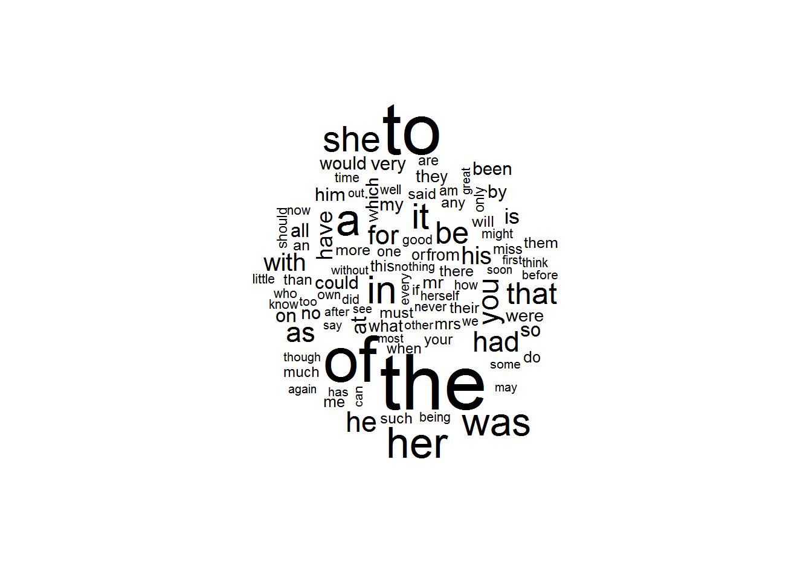

1. Xử lý ngôn ngữ tự nhiên cơ bản¶
1.1. Giới thiệu¶
Bên cạnh các định dạng dữ liệu cơ bản (dạng bảng), dữ liệu dạng text
ngày càng đóng vai trò quan trọng và đòi hỏi cần được xử lý và phân tích
hiệu quả. Trong phần này, chúng ta sẽ đi qua các cách xử lý dữ liệu text
cơ bản có thể áp dụng trong R với tidytext và h2o.
Lưu ý: Khi xử lý dữ liệu định dạng tiếng Việt, ta cần sử dụng
Macbook hoặc Linux trên cloud hoặc cài đặt qua docker.
Dữ liệu text có 3 dạng:
- String: Text thuần túy
- Corpus: Text và metadata
- Document-term matrix: Dạng sparse matrix, dòng là document, cột
là
termđã được phân rã
Phân tích khám phá dữ liệu text thường trải qua ba giai đoạn:
- Unnest token: Phân rã
textthành các cụm 2 hoặc 3 âm, được gọi làtokens - Loại bỏ các cụm, từ vô nghĩa
- Vizualize kết quả thành định dạng words hoặc tiếp tục xây dựng thành các nhóm mô hình dự báo
1.2. Unnest_tokens¶
Unnest tokens là một kỹ thuật cho phép tách các từ trong words thành từng dòng
library(tidytext)
library(tidyverse)
text <- c("Because I could not stop for Death -",
"He kindly stopped for me -",
"The Carriage held but just Ourselves -",
"and Immortality")
text_df <- data_frame(line = 1:4, text = text)
text_df
## # A tibble: 4 x 2
## line text
## <int> <chr>
## 1 1 Because I could not stop for Death -
## 2 2 He kindly stopped for me -
## 3 3 The Carriage held but just Ourselves -
## 4 4 and Immortality
#Sử dụng tokens
#Tokens theo từ
text_df %>%
unnest_tokens(word, text)
## # A tibble: 20 x 2
## line word
## <int> <chr>
## 1 1 because
## 2 1 i
## 3 1 could
## 4 1 not
## 5 1 stop
## 6 1 for
## 7 1 death
## 8 2 he
## 9 2 kindly
## 10 2 stopped
## 11 2 for
## 12 2 me
## 13 3 the
## 14 3 carriage
## 15 3 held
## 16 3 but
## 17 3 just
## 18 3 ourselves
## 19 4 and
## 20 4 immortality
#Tokens theo cụm 2 từ
text_df %>%
unnest_tokens(ngram, text, token = "ngrams", n = 2)
## # A tibble: 16 x 2
## line ngram
## <int> <chr>
## 1 1 because i
## 2 1 i could
## 3 1 could not
## 4 1 not stop
## 5 1 stop for
## 6 1 for death
## 7 2 he kindly
## 8 2 kindly stopped
## 9 2 stopped for
## 10 2 for me
## 11 3 the carriage
## 12 3 carriage held
## 13 3 held but
## 14 3 but just
## 15 3 just ourselves
## 16 4 and immortality
1.3. Loại bỏ các từ thưa¶
Trong ví dụ trên, ta chưa loại bỏ các cụm từ không cần thiết. Khi phân tích, cần loại bỏ các từ này để tránh bị nhiễu
stop_words <- data.frame(word = c("i", "not", "but", "and"))
#Loại bỏ stopword
text_df %>%
unnest_tokens(word, text) %>%
anti_join(stop_words) %>%
arrange(line)
## # A tibble: 16 x 2
## line word
## <int> <chr>
## 1 1 because
## 2 1 could
## 3 1 stop
## 4 1 for
## 5 1 death
## 6 2 he
## 7 2 kindly
## 8 2 stopped
## 9 2 for
## 10 2 me
## 11 3 the
## 12 3 carriage
## 13 3 held
## 14 3 just
## 15 3 ourselves
## 16 4 immortality
#Đếm tần xuất
text_df %>%
unnest_tokens(word, text) %>%
count(word, sort = T)
## # A tibble: 19 x 2
## word n
## <chr> <int>
## 1 for 2
## 2 and 1
## 3 because 1
## 4 but 1
## 5 carriage 1
## 6 could 1
## 7 death 1
## 8 he 1
## 9 held 1
## 10 i 1
## 11 immortality 1
## 12 just 1
## 13 kindly 1
## 14 me 1
## 15 not 1
## 16 ourselves 1
## 17 stop 1
## 18 stopped 1
## 19 the 1
1.4. Xây dựng wordcloud¶
library(wordcloud)
library(janeaustenr)
library(stringr)
tidy_books <- austen_books() %>%
group_by(book) %>%
mutate(linenumber = row_number(),
chapter = cumsum(str_detect(text, regex("^chapter [\\divxlc]",
ignore_case = TRUE)))) %>%
ungroup() %>%
unnest_tokens(word, text)
tidy_books %>%
anti_join(stop_words) %>%
count(word) %>%
with(wordcloud(word, n, max.words = 100),
colors=brewer.pal(2, "Pal2"))
